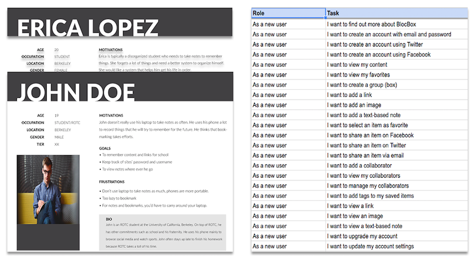

UX RESEARCH
User surveys and user stories are used to decide what features are necessary for simpleBox. To do that, I sent out a survey to find out what users were proactively using, their habits, and their competition in content and devices use. From the data that I’ve collected, I was able to come up with appriopriate user stories and personas to help me understand users’ goals, behaviors, and how they will interact with the application.
63% of users typically use their smart phones to browse the net.
50% of users typically use their laptop to browse the net.
63% of users save online content by bookmarking it in their browser
What most users like about using tools to bookmark is that it is convenient and integrated across all of their devices
What most users don't like about these tools is that most of them are complicated and has too many features.
Based on the survey, I was able to determine that simpleBox needs to be accessbile across multiple platforms because majority of users use laptop or smartphones to browse the internet. Additionally, organization and centralization seems to be the main theme from the survey. Many users feel that some of the tools they use leads to a clutter space, particulary bookmarking. Therefore, it is important that simpleBox provides a space of organization for the end-users.
From the research, I made a list of user stories to help me create user flows. In the diagram, I focus on the different user experience for both new and returning users, with several similarities. This process helped me craft a minimum viable product for simpleBox.
Click here to view the user flow